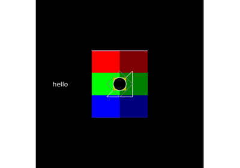
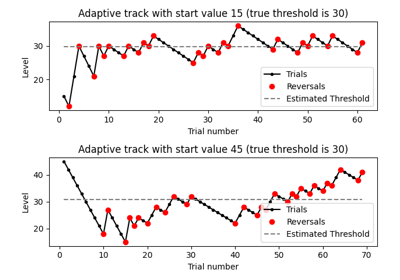
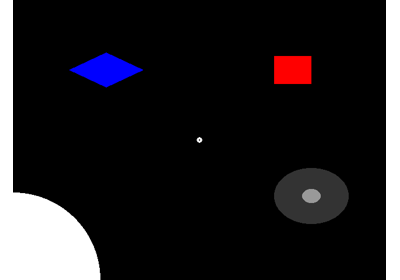

Experiments#
More specialized experiment code and examples.



Experiment drawing methods



Adaptive tracking from above and below
Adaptive tracking from above and below
Adaptive tracking for two trial types and tracker reconstruction from .tab
Adaptive tracking for two trial types and tracker reconstruction from .tab


Mouse click demo